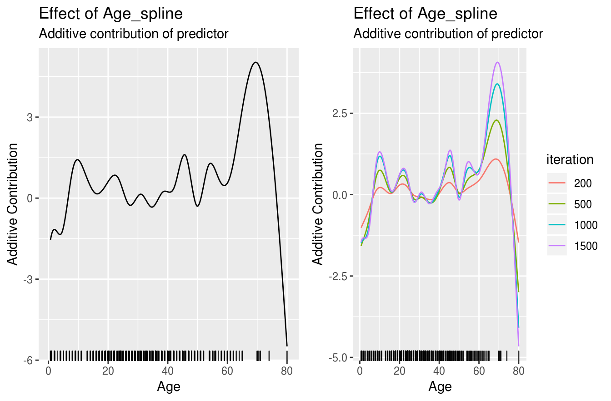
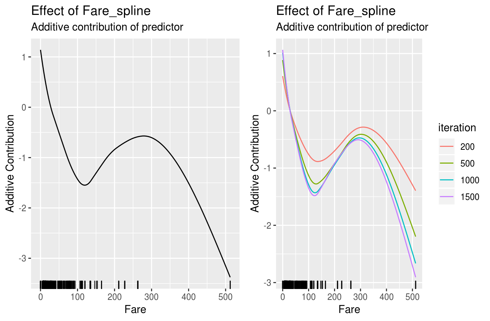

use_case.RmdWe use the titanic dataset with binary classification on survived. First of all we store the train and test data in two data frames and remove all rows that contains NAs:
# Store train and test data:
df_train = na.omit(titanic::titanic_train)
str(df_train)
#> 'data.frame': 714 obs. of 12 variables:
#> $ PassengerId: int 1 2 3 4 5 7 8 9 10 11 ...
#> $ Survived : int 0 1 1 1 0 0 0 1 1 1 ...
#> $ Pclass : int 3 1 3 1 3 1 3 3 2 3 ...
#> $ Name : chr "Braund, Mr. Owen Harris" "Cumings, Mrs. John Bradley (Florence Briggs Thayer)" "Heikkinen, Miss. Laina" "Futrelle, Mrs. Jacques Heath (Lily May Peel)" ...
#> $ Sex : chr "male" "female" "female" "female" ...
#> $ Age : num 22 38 26 35 35 54 2 27 14 4 ...
#> $ SibSp : int 1 1 0 1 0 0 3 0 1 1 ...
#> $ Parch : int 0 0 0 0 0 0 1 2 0 1 ...
#> $ Ticket : chr "A/5 21171" "PC 17599" "STON/O2. 3101282" "113803" ...
#> $ Fare : num 7.25 71.28 7.92 53.1 8.05 ...
#> $ Cabin : chr "" "C85" "" "C123" ...
#> $ Embarked : chr "S" "C" "S" "S" ...
#> - attr(*, "na.action")= 'omit' Named int 6 18 20 27 29 30 32 33 37 43 ...
#> ..- attr(*, "names")= chr "6" "18" "20" "27" ...In the next step we transform the response to a factor with more intuitive levels:
Due to the R6 API it is necessary to create a new class object which gets the data, the target as character, and the used loss. Note that it is important to give an initialized loss object:
cboost = Compboost$new(data = df_train, target = "Survived",
loss = LossBinomial$new(), oob_fraction = 0.3)Use an initialized object for the loss gives the opportunity to use a loss initialized with a custom offset.
Adding new base-learners is also done by giving a character to indicate the feature. As second argument it is important to name an identifier for the factory since we can define multiple base-learner on the same source.
For instance, we can define a spline and a linear base-learner of the same feature:
# Spline base-learner of age:
cboost$addBaselearner("Age", "spline", BaselearnerPSpline)
# Linear base-learner of age (degree = 1 with intercept is default):
cboost$addBaselearner("Age", "linear", BaselearnerPolynomial)Additional arguments can be specified after naming the base-learner. For a complete list see the functionality at the project page:
cboost$train(2000, trace = 100)
#> 1/2000 risk = 0.74 oob_risk = 0.72 time = 1
#> 100/2000 risk = 0.66 oob_risk = 0.63 time = 14752
#> 200/2000 risk = 0.63 oob_risk = 0.61 time = 29785
#> 300/2000 risk = 0.62 oob_risk = 0.6 time = 45490
#> 400/2000 risk = 0.61 oob_risk = 0.59 time = 61563
#> 500/2000 risk = 0.61 oob_risk = 0.59 time = 78167
#> 600/2000 risk = 0.6 oob_risk = 0.59 time = 94929
#> 700/2000 risk = 0.6 oob_risk = 0.59 time = 111800
#> 800/2000 risk = 0.6 oob_risk = 0.59 time = 129336
#> 900/2000 risk = 0.6 oob_risk = 0.59 time = 147879
#> 1000/2000 risk = 0.6 oob_risk = 0.59 time = 166092
#> 1100/2000 risk = 0.6 oob_risk = 0.59 time = 185840
#> 1200/2000 risk = 0.6 oob_risk = 0.59 time = 204790
#> 1300/2000 risk = 0.6 oob_risk = 0.59 time = 224534
#> 1400/2000 risk = 0.6 oob_risk = 0.59 time = 243657
#> 1500/2000 risk = 0.6 oob_risk = 0.59 time = 262600
#> 1600/2000 risk = 0.6 oob_risk = 0.58 time = 283442
#> 1700/2000 risk = 0.6 oob_risk = 0.58 time = 303637
#> 1800/2000 risk = 0.6 oob_risk = 0.58 time = 324104
#> 1900/2000 risk = 0.6 oob_risk = 0.58 time = 343929
#> 2000/2000 risk = 0.59 oob_risk = 0.58 time = 364232
#>
#>
#> Train 2000 iterations in 0 Seconds.
#> Final risk based on the train set: 0.59
cboost
#> Component-Wise Gradient Boosting
#>
#> Trained on df_train with target Survived
#> Number of base-learners: 5
#> Learning rate: 0.05
#> Iterations: 2000
#> Offset: 0.1779
#>
#> LossBinomial Loss:
#>
#> Loss function: L(y,x) = log(1 + exp(-2yf(x))
#>
#> Objects of the Compboost class do have member functions such as getEstimatedCoef(), getInbagRisk() or predict() to access the results:
str(cboost$getEstimatedCoef())
#> List of 5
#> $ Age_spline : num [1:24, 1] -4.94 -0.43 -2.14 1.79 1.16 ...
#> $ Fare_spline : num [1:17, 1] 1.961 0.236 -0.53 -1.231 -1.594 ...
#> $ Sex_female_categorical: num [1, 1] -1.78
#> $ Sex_male_categorical : num [1, 1] 0.667
#> $ offset : num 0.178
str(cboost$getInbagRisk())
#> num [1:2001] 0.739 0.738 0.735 0.735 0.732 ...
str(cboost$predict())
#> num [1:500, 1] -2.459 -0.905 -2.458 1.267 1.408 ...To obtain a vector of selected learner just call getSelectedBaselearner()
table(cboost$getSelectedBaselearner())
#>
#> Age_spline Fare_spline Sex_female_categorical
#> 1395 255 287
#> Sex_male_categorical
#> 63We can also access predictions directly from the response object cboost$response and cboost$response_oob. Note that $response_oob was created automatically when defining an oob_fraction within the constructor:
To set the whole model to another iteration one can easily call train() to another iteration:
cboost$train(3000)
#>
#> You have already trained 2000 iterations.
#> Train 1000 additional iterations.
#>
#> 2025/3000 risk = 0.59 oob_risk = 0.58 time = 369436
#> 2100/3000 risk = 0.59 oob_risk = 0.58 time = 385687
#> 2175/3000 risk = 0.59 oob_risk = 0.58 time = 401881
#> 2250/3000 risk = 0.59 oob_risk = 0.58 time = 418055
#> 2325/3000 risk = 0.59 oob_risk = 0.58 time = 433386
#> 2400/3000 risk = 0.59 oob_risk = 0.58 time = 448939
#> 2475/3000 risk = 0.59 oob_risk = 0.58 time = 464457
#> 2550/3000 risk = 0.59 oob_risk = 0.58 time = 481048
#> 2625/3000 risk = 0.59 oob_risk = 0.58 time = 498362
#> 2700/3000 risk = 0.59 oob_risk = 0.58 time = 515214
#> 2775/3000 risk = 0.59 oob_risk = 0.58 time = 532765
#> 2850/3000 risk = 0.59 oob_risk = 0.58 time = 549994
#> 2925/3000 risk = 0.59 oob_risk = 0.58 time = 567323
#> 3000/3000 risk = 0.59 oob_risk = 0.58 time = 583862
str(cboost$getEstimatedCoef())
#> List of 5
#> $ Age_spline : num [1:24, 1] -7.662 0.217 -2.487 2.031 1.014 ...
#> $ Fare_spline : num [1:17, 1] 2.059 0.222 -0.536 -1.273 -1.64 ...
#> $ Sex_female_categorical: num [1, 1] -1.81
#> $ Sex_male_categorical : num [1, 1] 0.667
#> $ offset : num 0.178
str(cboost$getInbagRisk())
#> num [1:3001] 0.739 0.738 0.735 0.735 0.732 ...
table(cboost$getSelectedBaselearner())
#>
#> Age_spline Fare_spline Sex_female_categorical
#> 2288 330 319
#> Sex_male_categorical
#> 63To visualize a base-learner it is important to exactly use a name from getBaselearnerNames():
gg1 = cboost$plot("Age_spline")
gg2 = cboost$plot("Age_spline", iters = c(50, 100, 500, 1000, 1500))
gg1 = cboost$plot("Age_spline")
gg2 = cboost$plot("Age_spline", iters = c(50, 100, 500, 1000, 1500))